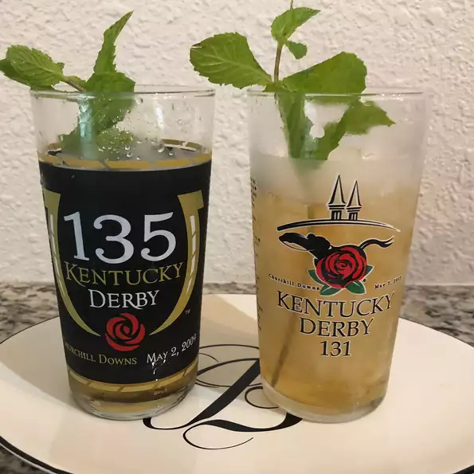

Mint Jules Recipe

Description
Perfectly refreshing juleps, which will be the best choice after having all thoes tasty meals from our page eaten
Ingredients
- 2 cups water
- 2 cups white sugar
- ½ cup roughly chopped fresh mint leaves
- 32 fluid ounces Kentucky bourbon
- 8 sprigs fresh mint leaves for garnish
Steps
- Combine water, sugar and chopped mint leaves in a small saucepan. Bring to a boil over high heat until the sugar is completely dissolved.
Allow syrup to cool, approximately 1 hour. Pour syrup through a strainer to remove mint leavesn
- Fill eight cups or frozen goblets with crushed ice and pour 4 ounces of bourbon and 1/4 cup mint syrup in each.
(Proportions can be adjusted depending on each person's sweet tooth). Top each cup with a mint sprig and a straw.
Trim straws to just barely protrude from the top of the cups. Serve juleps on a silver plattern.